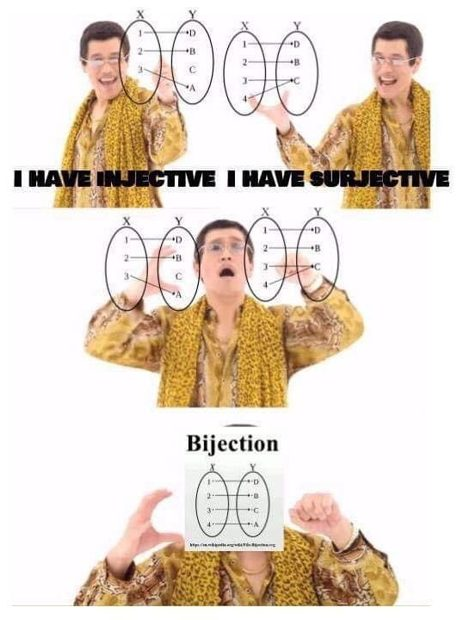

📡 Küldetés-eligazítás

📡 Petar Pauk: Nézzük meg közelebbről a hálót! Van-e két szál, amely ugyanahhoz a célponthoz vezet? Elérünk-e minden célpontot? Az injektív, szürjektív és bijektív tulajdonság ezekre a kérdésekre ad választ.
Egy függvénynél előfordulhat, hogy különböző bemenetekhez mindig különböző kép tartozik. Az is lehet, hogy a kodomén minden elemét felveszi értékként. Nyíldiagramokon vizsgáljuk meg ezt a két tulajdonságot, majd azt az esetet, amikor mindkettő teljesül. Így azt is megértjük, mikor fordítható meg a hozzárendelés.
Injektív, szürjektív, bijektív
Nézzük meg, mit árulnak el a nyilak a függvény tulajdonságairól.
📗 Definíció
Az \(f:A\to B\) függvény- injektív (1–1), ha különböző őselemek képe is különböző: \(x_{1}\neq x_{2} \Rightarrow f(x_{1})\neq f(x_{2})\);
- szürjektív (ráképezés), ha \(B\) minden eleme kép: \((\forall y\in B)(\exists x\in A) f(x)=y\), azaz \(R_{f}=B\);
- bijektív, ha injektív és szürjektív is (tökéletes párosítás).
⚠️ Kán csapdája — a képlet önmagában nem elég
Az injektivitás nem függ attól, mit választunk kodoménnak — az értelmezési tartománytól viszont igen: az \(f(x)=x^2\) az \(\mathbb{R}\)-en nem injektív, a \([0;+\infty)\)-en már igen. A szürjektivitás viszont attól is függ, mit választunk kodoménnak (érkezési halmaznak) (\(B\)-nek) — ugyanaz a képlet az egyik \(B\)-vel szürjektív, a másikkal nem.
Nézd meg: az \(f(x)=x^{2}\) hozzárendelés
- \(f:\mathbb{R}\to\mathbb{R}\) esetén nem szürjektív — a negatív számok nem képek;
- \(f:\mathbb{R}\to[0;+\infty)\) esetén viszont igen.
Ezért mondjuk ki mindig, hogy \(f:A\to B\) — a két halmaz nélkül a kérdés „szürjektív-e?” nem is válaszolható meg.

✏️ Kiképzési szimuláció
Legyen \(A=\{1,2,3\}\), és \(g:A\to A\), \(g(1)=2, g(2)=3, g(3)=1\). Az \(A\) halmaz minden eleme pontosan egyszer szerepel képként, ezért \(g\) bijektív. Ezzel szemben az \(f(1)=p, f(2)=q, f(3)=p\) hozzárendelés nem injektív (\(f(1)=f(3)\)), és ha a kodomén \(\{p,q,r,s\}\), akkor nem is szürjektív.🎯 Gyors kérdés
Kvíz — az \(f:\mathbb{R}\to \mathbb{R}\), \(f(x)=2x+1\) milyen?
Ellenőrizd!
Gyakorolj! Válaszd a bevetésed: (injektív, szürjektív, bijektív eldöntése nyíldiagramról és képletből)

📡 Petar Pauk: Most már meg tudod különböztetni a három tulajdonságot. A következő lapon két hálót kapcsolunk össze, majd megkeressük a visszafelé vezető utat: jön a kompozíció és az inverz.